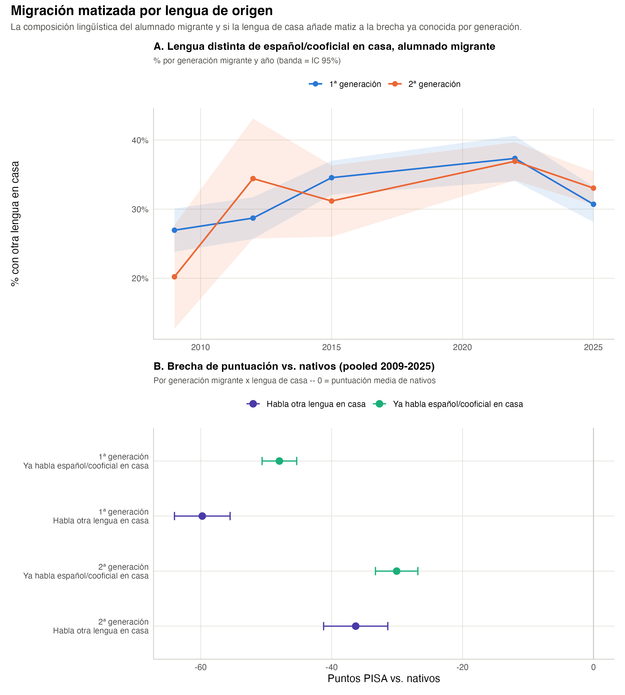

| Año | % otra lengua | IC95% inf. | IC95% sup. | n |
|---|---|---|---|---|
| 1ª generación | ||||
| 2009 | 27.0 | 23.8 | 30.1 | 1,844 |
| 2012 | 28.7 | 25.7 | 31.7 | 2,062 |
| 2015 | 34.6 | 32.1 | 37.0 | 2,914 |
| 2022 | 37.3 | 34.1 | 40.6 | 1,594 |
| 2025 | 30.7 | 28.2 | 33.3 | 2,441 |
| 2ª generación | ||||
| 2009 | 20.2 | 12.7 | 27.7 | 298 |
| 2012 | 34.4 | 25.7 | 43.1 | 215 |
| 2015 | 31.2 | 26.0 | 36.3 | 534 |
| 2022 | 36.9 | 34.2 | 39.7 | 2,225 |
| 2025 | 33.0 | 30.7 | 35.4 | 2,872 |
2 Migración ampliada: el papel de la lengua de casa
El estatus migratorio simple (nativo / 2ª generación / 1ª generación), usado en pisa-espana-ccaa, agrupa junto a alumnado con orígenes muy distintos. Este capítulo lo matiza con la lengua que se habla en casa – español/cooficial (euskera, catalán, gallego, valenciano, aranés) frente a otra lengua – extraída de LANGN (ver README.md para la categorización y sus límites; disponible sin huecos en las 5 ediciones, 2009-2025).
Dos preguntas: (1) ¿cómo ha cambiado la composición lingüística del alumnado migrante con el tiempo? y (2) dentro de cada generación migrante, ¿hablar otra lengua en casa añade una penalización de puntuación más allá de la que ya se conoce por generación, o la generación ya lo explica todo?
2.1 2.1 Composición lingüística del alumnado migrante

El porcentaje que habla otra lengua en casa sube en ambas generaciones desde 2009 hasta 2022 (1ª generación: del 27% al 37%; 2ª generación: del 20% al 37%), con un descenso en 2025 en ambos casos. Un matiz que no encaja con una historia simple de “asimilación lingüística intergeneracional”: si la 2ª generación (nacida en España) fuera dejando progresivamente el idioma de origen en casa, cabría esperar un % de otra lengua sistemáticamente MENOR que en 1ª generación – en cambio, desde 2012 las dos generaciones tienen porcentajes muy parecidos (e incluso la 2ª generación por encima en 2012 y 2025). Este dato por sí solo no permite concluir nada sobre asimilación – puede reflejar simplemente que la composición de países de origen del alumnado migrante ha ido cambiando de edición a edición – pero sí descarta la lectura más ingenua de “cuanto más tiempo lleva la familia en España, menos se habla la lengua de origen en casa”.
2.2 2.2 ¿Añade matiz la lengua de casa a la brecha por generación?
| Generación | Lengua de casa | Media | IC 95% | Brecha vs. nativos | N |
|---|---|---|---|---|---|
| Nativo | Español/cooficial en casa | 489.5 | 488.9 – 490.2 | 0.5 | 118495 |
| Nativo | Otra lengua en casa | 451.4 | 443 – 459.8 | -37.7 | 1279 |
| 1ª generación | Español/cooficial en casa | 441.1 | 438.4 – 443.7 | -48.0 | 7531 |
| 1ª generación | Otra lengua en casa | 429.3 | 425 – 433.5 | -59.8 | 3324 |
| 2ª generación | Español/cooficial en casa | 459.0 | 455.7 – 462.2 | -30.1 | 4138 |
| 2ª generación | Otra lengua en casa | 452.7 | 447.8 – 457.6 | -36.3 | 2006 |
Tomando como referencia la media de TODOS los nativos (489.5 puntos, sin desglosar por lengua de casa – necesario para que la brecha sea un único número comparable, no una por cada fila, ver nota de depuración de un bug real en R/07_migracion_lengua.R), la respuesta es clara en las dos generaciones: hablar otra lengua en casa añade una penalización adicional, más allá de la ya conocida por generación migrante:
- 1ª generación: -48 puntos si ya habla español/cooficial en casa, frente a -59.8 si habla otra lengua – una penalización adicional de -11.8 puntos.
- 2ª generación: -30.1 puntos si ya habla español/cooficial en casa, frente a -36.3 si habla otra lengua – una penalización adicional de -6.3 puntos.
Es decir: la generación migrante NO agota la brecha. La lengua de casa añade un matiz real – mayor en 1ª generación (~12 puntos adicionales) que en 2ª (~6 puntos), lo que en sí mismo es coherente con que la 2ª generación, nacida en España, tiene en promedio más exposición al entorno educativo en español/cooficial incluso cuando en casa se hable otra lengua. (El grupo “nativo que habla otra lengua en casa”, N=1279, es pequeño y probablemente heterogéneo – familias de origen extranjero ya naturalizadas, hijos de expatriados, parejas mixtas – no se interpreta aquí más allá de la cifra bruta.)
| Año | Cooficial | Español | Otra lengua |
|---|---|---|---|
| 1ª generación | |||
| 2009 | 47 | 1298 | 499 |
| 2012 | 20 | 1447 | 595 |
| 2015 | 23 | 1921 | 970 |
| 2022 | 21 | 1034 | 539 |
| 2025 | 52 | 1668 | 721 |
| 2ª generación | |||
| 2009 | 11 | 221 | 66 |
| 2012 | 7 | 137 | 71 |
| 2015 | 9 | 348 | 177 |
| 2022 | 25 | 1448 | 752 |
| 2025 | 37 | 1895 | 940 |
A esta resolución de 3 categorías, “cooficial” por separado tiene celdas pequeñas todos los años (7-52 alumnos), sobre todo en 2ª generación – por eso el análisis de brecha (tabla anterior) colapsa cooficial dentro de “español/cooficial” en vez de tratarlo aparte. Con esa agrupación a 2 categorías, el desglose por año (data/tbl_brecha_lengua_year.rds) no tiene ninguna celda por debajo del umbral de 30 (0%), así que la comparación pooled de la tabla anterior y el desglose anual son igual de fiables en términos de tamaño muestral.